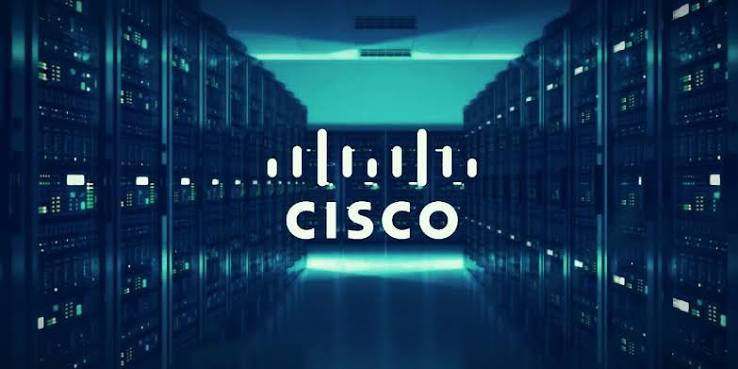

Cisco corrige vulnerabilidade crítica no Secure Email Gateway
A Cisco lançou uma correção para uma vulnerabilidade crítica identificada no Cisco Secure Email Gateway. A falha recebeu pontuação 9,8 no CVSS e estava sendo explorada ativamente, tornando a atualização dos sistemas afetados uma medida importante de segurança.

Criminosos exploram falha crítica no Cisco Secure Email Gateway
Criminosos estão explorando ativamente uma falha crítica no Cisco Secure Email Gateway que permite a um e-mail malicioso conceder acesso irrestrito de administrador máximo ao sistema. A vulnerabilidade tem como solução alternativa aplicar o patch da companhia.
A falha, identificada como CVE-2026-76461, recebeu pontuação 9,8 no sistema de avaliação de vulnerabilidades CVSS e afeta appliances físicos e virtuais do Secure Email Gateway, independentemente de como estejam configurados. A informação foi divulgada pelo The Register, que acompanha o caso.
O problema está na forma como o software AsyncOS, sistema operacional dos appliances da Cisco, processa mensagens recebidas. Um atacante não precisa de credenciais: basta enviar uma mensagem especialmente construída para o gateway vulnerável.
Se o ataque funcionar, o criminoso passa a executar comandos com privilégios de root, o nível mais alto de controle sobre o sistema.
Exploração ativa e clientes afetados
A Equipe de Resposta a Incidentes de Segurança de Produtos da Cisco tomou conhecimento da exploração ativa em setembro de 2026. A empresa não revelou quem está por trás dos ataques, há quanto tempo eles ocorrem nem quantas organizações foram comprometidas. A falha foi descoberta durante a resolução de um caso no Centro de Assistência Técnica da companhia.
Há indícios de que ao menos parte dos clientes do serviço de nuvem da empresa foi afetada. A Cisco diz que investigou dispositivos pertencentes ao seu serviço Secure Email Cloud e contatou diretamente os clientes cujos appliances apresentaram indicadores de possível comprometimento.
“Todos os dispositivos do Secure Email Cloud já foram atualizados para a versão AsyncOS 16.5.0-780.”
Versões corrigidas e prazo federal
A Cisco corrigiu a vulnerabilidade nas versões AsyncOS 15.5.5-014, 16.0.4-302 e 16.5.0-780. A empresa recomenda fortemente que os clientes migrem para a versão mais recente, a 16.5.0-780.
A Fundação Shadowserver rastreou mais de 400 appliances Cisco Secure Email Gateway expostos à internet na segunda-feira (14). A falha também foi incluída no catálogo de Vulnerabilidades Exploradas Conhecidas da Agência de Segurança Cibernética e de Infraestrutura dos Estados Unidos (CISA), com determinação para que agências civis federais americanas realizem a remediação até 17 de setembro.